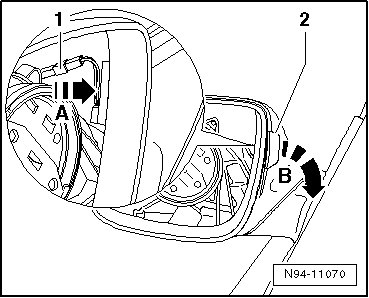

Lane Sensing System Warning Lamp: Service and Repair
Lane Change Assistance Exterior Rearview Mirror Warning Lamps
The same procedure is used to remove and install the lane change assistance warning lamp (in driver's exterior mirror) (K233) and lane change assistance warning lamp (in front passenger's exterior mirror)((K234). The illustrations only show the procedure for one side.
• The brightness of the warning lamps when operating depends on the brightness of the surroundings and is controlled via the rain and light sensor.
Removing
- Remove mirror glass.
- Disengage and disconnect harness connector - 1 -.

- Release retaining tab - arrow A - and press Lane Change Assistance Warning Lamp (in exterior mirror) - 2 - outward out of mirror housing - arrow B -.
Installing
Install in reverse order of removal, noting the following:
• In the case of one or more faulty LEDs, the Lane Change Assistance Warning Lamp (in exterior mirror) must be completely replaced.
CAUTION!
Risk of slivers
The mirror glass can break
Wear protective gloves when carrying out this work
• Make sure to press only in mirror center.
- Attach mirror glass at mirror adjusting unit and press on mirror glass.